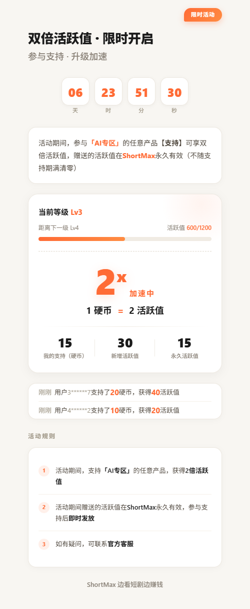

XS444-双倍活跃值
用户在活动时间内，支持产品获得的活跃值加倍
- 只有支持普通产品能获得加倍
- 支持智投、AI SOLO没有加倍
- 加倍部分的活跃值永久有效
页面数据说明
活动倒计时
1. 显示示例
- 超过23小时59分59秒时，显示示例：06天23时51分30秒
- 不足24小时且多于59分59秒，显示示例：00天23时51分30秒
- 不足59分钟且多于59秒，显示示例：00天00时51分30秒
- 不足59秒，显示示例：00天00时00分30秒
- 倒计时结束，显示示例：00天00时00分00秒
2. 活动开始前，依然会显示倒计时
- 依据活动结束时间计算倒计时
- 如果后端代码上没有活动结束时间，显示为 -- 天 -- 时 -- 分 -- 秒
3. 活动开始前，后台上的Banner（横幅管理），将该活动的Banner设置为不显示 或 设置为显示但不可点击
统计
需统计的数据：
- 用户当前等级
- 距离下一个等级升级的进度条
- 当前的用户活跃值
- 下一个等级升级需满足的活跃值
- 我的支持（硬币）：用户在活动期间支持普通产品的硬币金额
- 新增活跃值：用户在活动期间支持普通产品获得的活跃值（正常活跃值+永久活跃值）
- 永久活跃值：用户在活动期间支持普通产品获得的永久活跃值
统计的数据，当数据发生更新时，需要能实时更新，即不需要用户刷新页面或重新进入即可看到最新的数据
播报
跟福利-奖励页上播报需同步，在活动期间，用户支持普通产品后，活跃值需要能翻倍显示
- 同步指的是UID播报的用户ID、假数据的金额跟机器人的支持金额需要同步
- 不允许出现两边的UID不一致
- 不允许出现假数据在福利-奖励页上播报的机器人跟活动页的支持金额对不上
- 即不允许出现：
- 假数据在福利-奖励页上显示的机器人是AAA
- AAA在后台上设置的支持金额为55
- 假数据在活动页换上显示的支持金额30
